Leonardo Torres Montero
DevOps - ltmleo@hotmail.com
(19) 99287-8554
DOCUMENTAÇÃO
https://github.com/ltmleo/twitter-api-case
Twitter API
Esse projeto mostra de maneira simplificada o funcionamento de um ecossistema de microsserviços. E contém principalmente 4 componentes:
- Uma aplicação python agendada para rodar de hora em hora que salva informações adquiridas com a API do twitter em um banco de dados não relacional (mongoDB);
- API REST para realizar consultas ao banco, desenvolvida em Flask;
- Interface Web para consumir esta API desenvolvida em FLask;
- Stack de monitoração, logging e APM (elastic) para acompanhar o desempenho do sistema desenvolvido.
Além disso, visando auto escalabilidade e facilidade no deploy, foram utilizadas as ferramentas Helm e Kubernetes.
Requisitos
- Minikube: v1.1.9
- Kubernetes: v1.15.4
- Docker: v18.09.7
- Helm: v2.14.2
- Python: v3.6.9
Componentes
save-tweets
Responsável por alimentar o banco de dados, esse componente é agendado para rodar de uma e uma hora consumindo determinadas **#hashtags**, listadas abaixo: "#openbanking", "#apifirst", "#devops", #cloudfirst", "#microservices", "#apigateway", "#oauth", "#swagger", "#raml" e "#openapis". e salvando as seguintes informações de cada tweet:
- user: username do usuário;
- followers: Quantidade de seguidores do usuário;
- date: Data em que o tweet foi publicado;
- language: Língua em que o tweet foi publicado;
- country: Localização em que o tweet foi publicado;
Operação
Para rodar essa aplicação é necessário exportar como variável de ambiente a variável **PASSWORD**, à qual irá descriptografar as secrets e tokens da API do twitter.
Melhorias
- Colocar a variável PASSWORD como uma secret no kubernetes;
- Colocar o atributo salt da classe Crypt como um secret no kubernetes;
- Ler de um config map as hashtags pela qual o programa deve iterar;
- Modificar a maneira com o qual o logstash acessar os logs da aplicação;
- Adicionar autenticação ao acesso do mongoDB;
get-tweets-api
Responsável por consumir as informações no banco de dados e export em forma de uma API RESTFUL. Como está API foi pensada apenas para consumir os dados dos banco, apenas o método GET está disponível. O swagger da aplicação está disponível no prefixo "/" da aplicação.
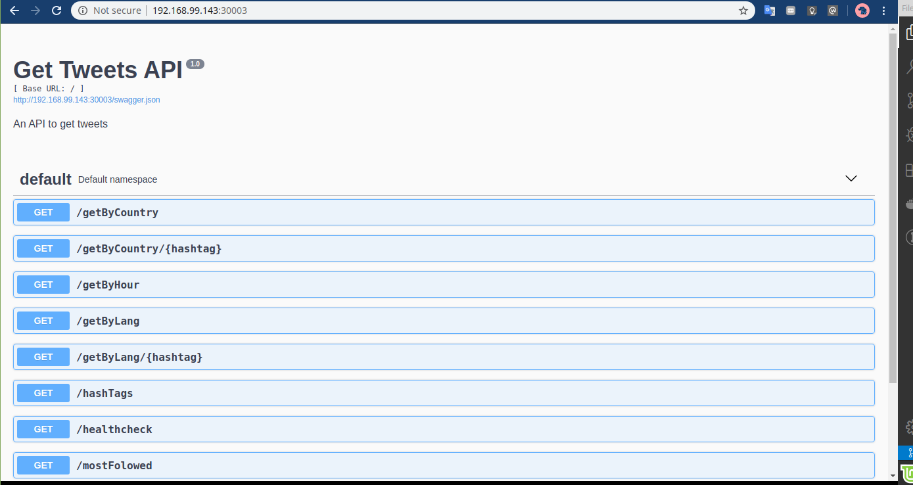
Operação
Para acessar a documentação completa dos métodos disponíveis da API, pode-se acessar o swagger, disponibilizado no prefixo ‘/’. Abaixo os métodos disponíveis.
- '/mostFolowed', '/mostFolowed/<topic>', '/mostFolowed/<int:number>', '/mostFolowed/<topic>/<int:number>': Método que retorna os usuários com mais seguidores, podemos filtrar por método e o número de usuários de retorno.
- ‘/hashTags’: Retorna as hashtags cadastradas no banco;
- '/getByHour': Trás os número de publicações por hora do dia;
- '/getByLang', '/getByLang/<hashtag>': O número de publicações por língua, pode-se filtrar pela hashtag;
- '/getByCountry', '/getByCountry/<hashtag>': O número de publicações por localização, pode-se filtrar pela hashtag;
- '/healthcheck': Retorna ok 200;
- '/' - swagger da aplicação;
Melhorias
- Adicionar API-KEY;
- Fazer com que o healthcheck realize testes nos metodos;
web-interface
A interface web desenvolvida trás de uma melhor forma os dados expostos pela API. Abaixo as páginas disponíveis.
- $(minikube ip)/numTweets: Retorna um gráfico de linha com o número de tweets salvos pela hora de criação, salvos no banco de dados.
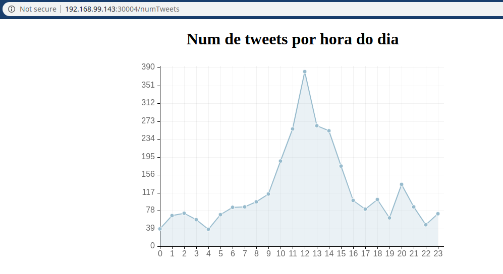
- $(minikube ip)/mostFolowed/<hashtag>/<int:number>: retorna um gráfico de barra com a quantidade de seguidores, dos seguidores mais seguidos, é possível filtrar por hashtag e o número de resultados.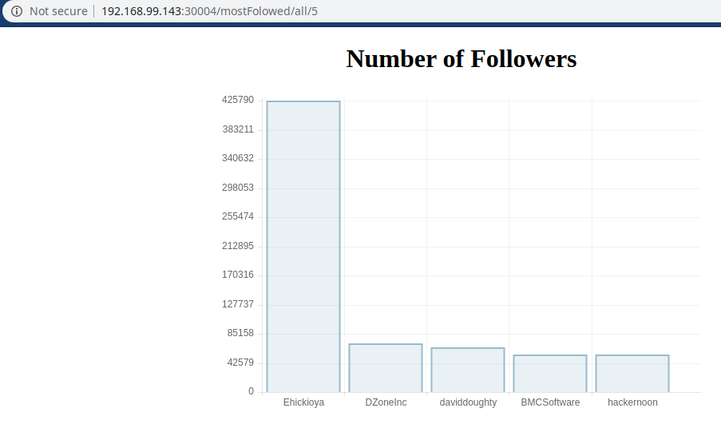
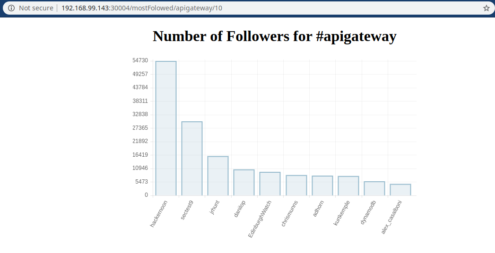
- $(minikube ip)/getByCountry/<hashtag>: Retorna uma tabela com o número de tweets por localização. É possível filtrar pela hashtag.
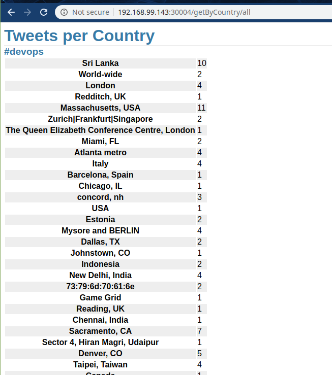 | 
|
- $(minikube ip)/getByLang/<hashtag>: Retorna uma tabela com o número de tweets por língua. É possível filtrar pela hashtag.
Logging:
Enviando os logs das aplicações para o logstash e salvando no elasticsearch, podemos fazer algumas consultas no kibana e montar gráficos, informando sobre a saúde da aplicação.
Stream de logs:
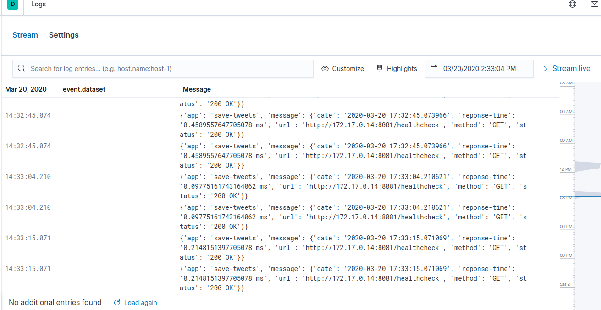
Charts:
Quantidade de cada level de log:
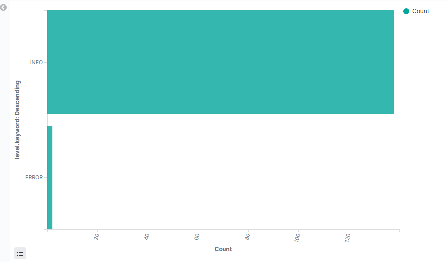
Quantidade de logs por pod:
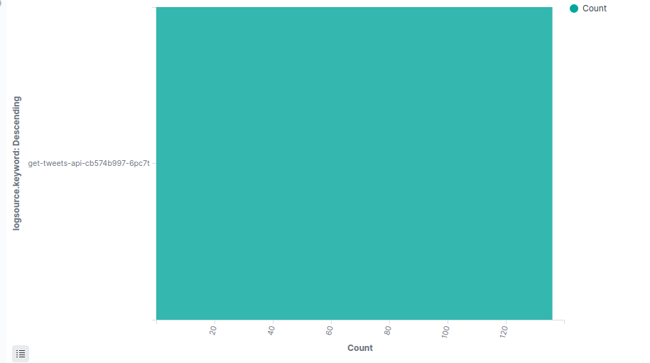
Métricas
APM:
Transações das aplicações:
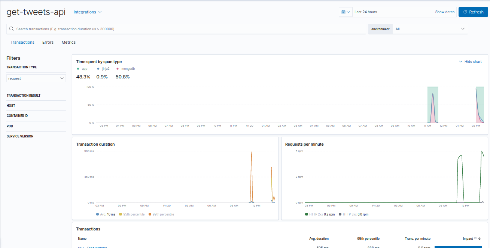
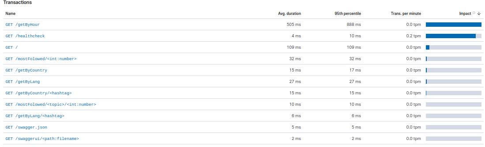
Erros:
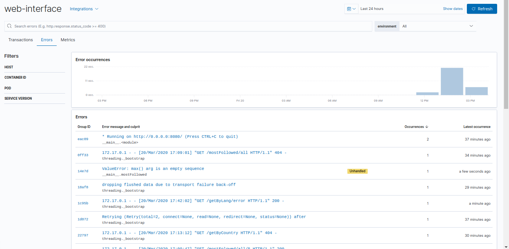
Métricas:
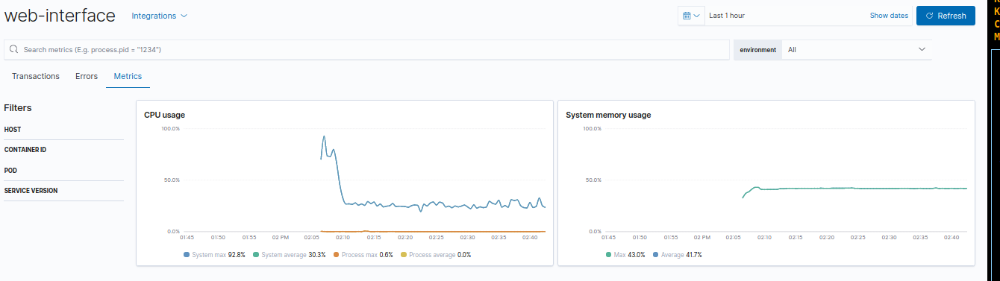
Metricbeats:
Visão por pod:
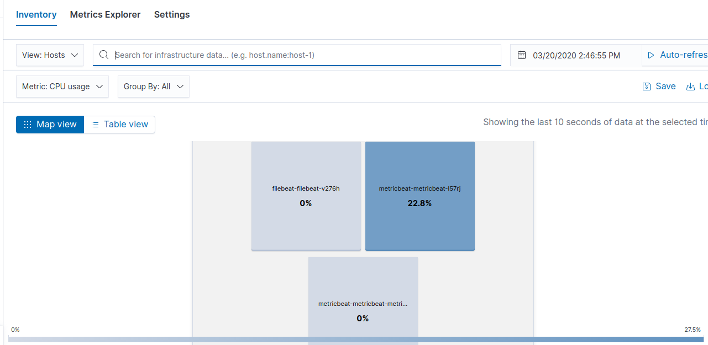
Metricas:
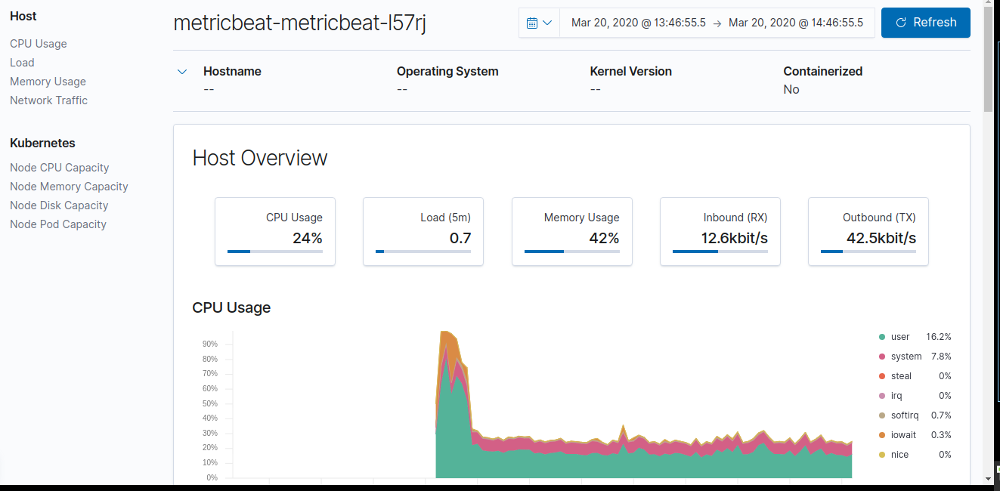
Deploy:
Para fazer o deploy de toda infraestrutura e aplicações um script foi criado chamado de deploy.sh. Uso: ./deploy.sh [OPÇÕES]:
- -a Realiza deploy de todas release
- -i Realiza deploy das releases de ferramentas
- -u Realiza deploy das releases das aplicações
- -p OBRIGATÓRIO: passord para realizar deploy da aplicação save-tweets
- -h Exibe ajuda.
Esse script realiza helm upgrade ou helm delete das aplicações. Além disso auxilia a passar a senha necessária para a aplicação de coleta de tweets funcionar. para um deploy te toda aplicação, após iniciar o minikube, e setar o tiller do helm com o comando (helm init --upgrade). Executar o script: ./deploy -p “PASSWORD” -a.
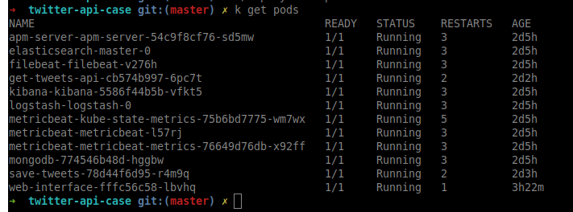
Para obter o ip do minikube: $ minikube ip
Endpoints:
- $(minikube ip):3002 - Kibana
- $(minikube ip):3003 - API
- $(minikube ip):3004 - Interface Web
DockerHub com as imagens:
https://hub.docker.com/repository/docker/leonardomontero/twitter-api-case